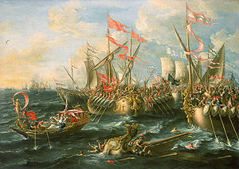

| |
Battle of Actium
The Battle of Actium was the decisive confrontation of the Final War of Roman Republic,a naval war which was between the Octavian and the combined Forces of Mark Antony and Queen Cleopatra on 2 September 31 B.C. at the Ionoian Sea, near the city of Actium,in Roman Province of Epirus vetus in Greece.The Octavian Army leader was Marcus Vipsanius Agrippa and Antony's army was led by ships of Queen Cleopatra of Ptolemaic Egypt.The strenght of Marcus Vipsanius Agrippa's fleet was 250 galleys,16000 infantry and 3000 archers while the strength of Antony's fleet was 290 galleys,30-50 transports ,20000 infantry and 2000 archers.The War Resulted in Octavian victory , with about 2500 people killed from Octavian Army and over 5000 killed from Antony's fleet.

Battle of Actium
For
more information please visit :
More Information about the Battle of Actium from wikipedia
| |
|
|